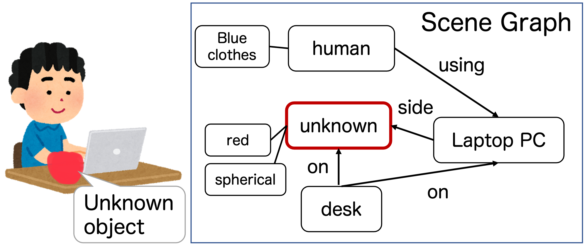

Scene Understanding including Unknown Objects/Events
Summary
When we humans see an unknown object, we can recognize it as some kind of object even if we don't know what it is, but robots can only detect objects that their object detectors have learned about and cannot estimate the relationship with other objects. We are researching the topic, Open-set recognition, which enables robot for detecting unknown objects, and Open-vocabulary recognition, which enables robot for detecting objects specified with new words. Not only unknown "Object", but we are also working on recognizing unknown action/event. (This work was/is supported in part by the MEXT (Ministry of Education, Culture, Sports, Science and Technology, JAPAN) through Grant-in-Aid for Scientific Research under Grant JP21H03519 and JP24H00733.)
Publications
- M. Sonogashira et al., Relationship-Aware Unknown Object Detection for Open-Set Scene Graph Generation, IEEE Access, 2024.
- T. T. Nguyen et al., One-stage open-vocabulary temporal action detection leveraging temporal multi-scale and action label features, FG2024.
- T. T. Nguyen et al., Zero-Shot Pill-Prescription Matching With Graph Convolutional Network and Contrastive Learning, IEEE Access, 2024.
- M. Sonogashira & Y. Kawanishi, Towards Open-Set Scene Graph Generation with Unknown Objects, IEEE Access, 2022.